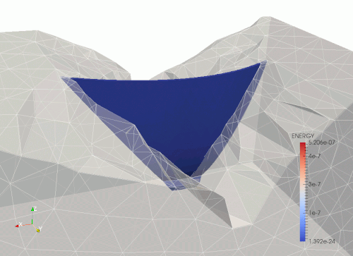

This is simple example how to run a simple problem for linear and non-linear dynamics. Is is directed for beginners starting to work with MoFEM.
Implementation of following examples can be found in module NonLinear Elastic Element. Stiffness matrix and internal force vector is calulated in NonlinearElasticElement, damping matrix is implemented in KelvinVoigtDamper and mass matrix is implemented in ConvectiveMassElement.

Arch dam - erthquace load
Dynamic analysis of prismatic 3d bar
You can run this analysis in Jupyter notebook. First follow instruction here Running JupyterHub. Then select file in um_view/linear_elasticity/dam_example.ipynb
Input files
Following description and line commands are in presumption that user parent working directory is users_modules/basic_finite_elements/nonlinear_elasticity/examples/prismatic_bar in build directory. All input files used in this example can be found in the example directory.
Journal file
Mesh file with boundary conditions, material properties can be created with Cubit journal file with prismatic bar (rod.jou),
reset
set duplicate block elements on
brick x 1 y 1 z 10
create Displacement on surface 1 dof 3 fix 0
create Displacement on vertex 1 dof 3 dof 2 fix 0
create Displacement on vertex 3 dof 3 dof 1 fix 0
create Displacement on vertex 4 dof 1 dof 2 dof 3 fix 0
create pressure on surface 2 magnitude 2
#create force on surface 2 force value 1 direction y
block 1 volume all
block 1 name 'MAT_ELASTIC'
block 1 attribute count 2
block 1 attribute index 1 1e1 #young modulus
block 1 attribute index 2 0.25 #poisson ratio
block 2 volume 1
block 2 name "BODY_FORCES"
block 2 attribute count 4
block 2 attribute index 1 0.01 #material density
block 2 attribute index 2 0. #constant acceleration in x-direction
block 2 attribute index 3 0. #constant acceleration in y-direction
block 2 attribute index 4 0. #constant acceleration in z-direction
volume all scheme Tetmesh
volume all size auto factor 9
mesh volume all
Time history data
Time data history file (rod_history.in),
0.0 0.0
1.0 1.0
1.1001 0.0
100000 0.0
where first column represents time and second column represent time force scaling.
Executing code
If bar material model is NeoHookean (note that using key word KIRCHHOFF a St Venant Kirchhoff material is used)
mpirun -np 4 ../../nonlinear_dynamics \
-my_file rod.cub \
-ts_dt 0.01 -ts_max_time 4 -ts_max_snes_failures -1 \
-my_output_prt -1 -my_max_post_proc_ref_level 0 \
-my_disp_order 2 -my_time_data_file rod_history.in -default_material NEOHOOKEAN 2>&1 | tee log
If bar is made form Hooke material subjected to small strains and displacements,
mpirun -np 4 ../../nonlinear_dynamics \
-my_file rod.cub \
-ts_dt 0.01 -ts_max_time 4 -ts_max_snes_failures -1 \
-my_output_prt -1 -my_max_post_proc_ref_level 0 \
-my_disp_order 2 -my_time_data_file rod_history.in -default_material HOOKE -is_linear -snes_lag_jacobian -2 2>&1 | tee log
Notes:
- Approximation order can be set using -my_disp_order.
- Time integration scheme is controlled by -ts_type, look to PETSc manual for more details.
- If linear analysis i.e. -is_linear, then Jacobian can be calculated only once at 1st time step. To speed up calculations set -snes_lag_jacobian -2
- Resolution of post-processing mesh is set by -my_max_post_proc_ref_level 0. If more than 0, i.e. 1,2,... a denser post-processing mesh is generated. This results in biger size of post processing files and compromise overall efficiency.
- Using -my_output_prt -1, each time step is post-processed. In some cases every n-th step can be save on hard-drive, then set -my_output_prt -2, if every even you like to save. If option number is positive in addition restart file is saved, this allow to kick-start calculations from last converged step.
Generating data for plots
Note that executing code from example above generates log file. Filtering lines starting from key word Energy, data file with elastic energy, potential energy and total energy in time can be made.
For example, data for making plots in excel, gnuplot or any other plotting software is generated by flowing line command,
awk '/Energy/ { print $3,$6,$9,$11 }' log | tee plot_data
VTK files for paraview
Running dynamic analysis out_values_1.h5m, out_values_2.h5m, ... are created for each time step. Post-processing mesh in output fails is stored in native MoAB data format using standard h5m.
VTK files can be generated using script located in users_modules/basic_finite_elements/nonlinear_elasticity/do_vtk.sh. For example
../../do_vtk.sh out_values_*h5m
Selecting method for time stepping solver
In PETSc user can choose from range of implicit time stepping solvers, by setting option
where avilavle types are
For Alpha method user can set spectral radius following petsc documentation http://www.mcs.anl.gov/petsc/petsc-current/docs/manualpages/TS/TSAlphaSetRadius.html, for example
Dynamic analysis of Arch Dam
Input files
Following description and line commands are in presumption that user parent working directory is users_modules/basic_finite_elements/nonlinear_elasticity/examples/dam in build directory. All input files used in this example can be found in the example directory.
Accelerogram
This is simplified analysis of dam structure subjected to earthquake. Dynamic loads given in accelerogram are given in users_modules/basic_finite_elements/nonlinear_elasticity/examples/dam/accelerogram.in
0.00 0 0 0
0.01 0 2 0
0.02 0 -2 0
0.03 0 2 0
0.04 0 -2 0
0.05 0 2 0
0.06 0 -2 0
0.07 0 2 0
0.08 0 0 0
1000 0 0 0
where first columb represents time, second acceleretaion in x-direction, third column acceleration in y-direction and last column is acceleration in y-direction.
Time history data
For simplicity are other loads are constant in time, and time depenent laad scaling function is in users_modules/basic_finite_elements/nonlinear_elasticity/examples/dam/dam_history.in
Executing code
Line command executing model should be run from users_modules/basic_finite_elements/nonlinear_elasticity/examples/dam in build directory
mpirun -np 4 ../../nonlinear_dynamics \
-my_file dam.h5m \
-ts_dt 0.002 \
-ts_alpha_radius 0.5 \
-ts_max_time 8 -ts_max_snes_failures -1 \
-my_time_data_file dam_history.in \
-my_accelerogram accelerogram.in \
-my_solve_at_time_zero 1 \
-my_output_prt -1 -my_max_post_proc_ref_level 0 \
-my_disp_order 2 \
-default_material HOOKE -is_linear -snes_lag_jacobian 1 \
-elastic_material_configuration block_data.in 2>&1 | tee log
Options discussed in prismatic bar (Executing code) apply to this case as well, in addition more options are introduce in this example:
- -my_accelerogram accelerogram file
- -my_time_data_file force time scaling function
- -my_solve_at_time_zero 1, indicate that initial static analysis is run to calculate initial displacements.
- -elastic_material_configuration block_data.in, material configuration file. This file overwrite material parameters set in Cubit journal file
User can set material parameters or approximation order to each block defined in cubit.
# Block numbers block_1, block_3 and block_6 corespond to block sets in Cubit
# journal file.
# Arbitrary order of approx. for blockset
[block_1]
displacemet_order = 1
# Elastic material
[block_1]
# Elastic material properties. Possible materials are NEOHOOKEAN, HOOKE,
# KIRCHHOFF or any other added by user.
material = HOOKE
# Unit N/cm^2
young_modulus = 2.6e+4
poisson_ratio = 0.2
# Damper
[block_3]
# eta = 0.04, value eta*G=eta*E/2*(1+nu)
# Unit N/(cm^3 * s)
dashG = 312
# Only shear damping, damping bulk modulus = 0 when dashpot poison ratio is -1
dashPoisson = -1
# Body forces
[block_6]
# Unit kg/cm^3
density = 0.0023
Journal file
Mesh journal mesh file is included below. Please note that at the end of the file boundary conditions, blocks with elastic matrix, damping model and body forces are defined.
dam.jou